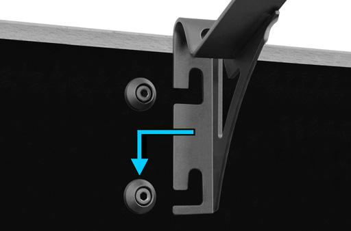
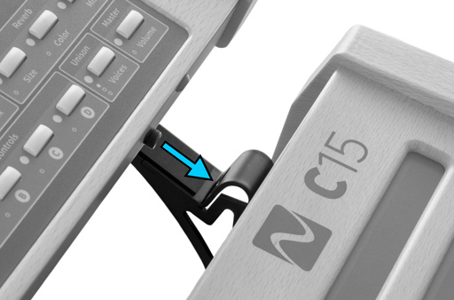
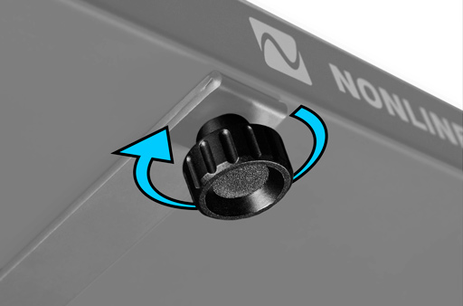
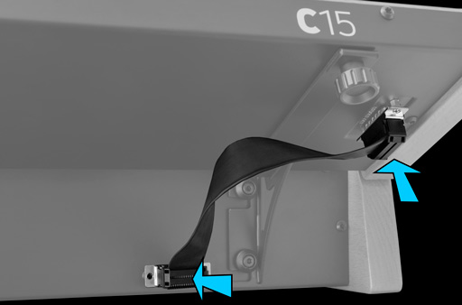
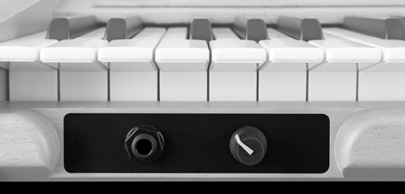
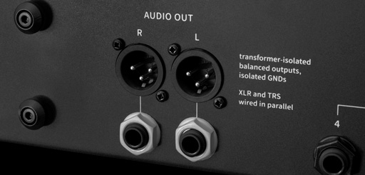
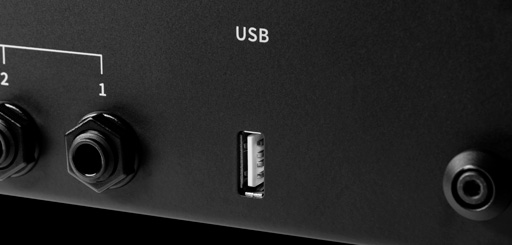
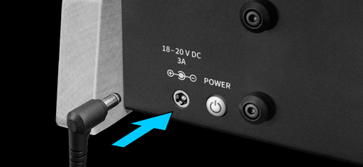
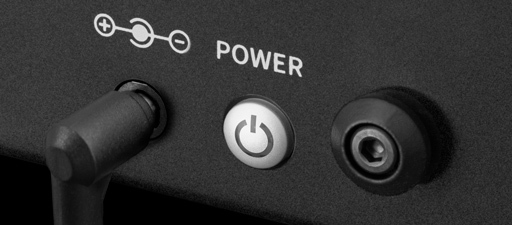
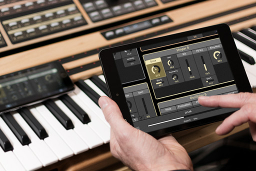

2. Setting up the C15
2.1 Mounting the Panel Unit
Ensure the C15 is switched off before following the next four steps:
1. Attach Mounting Brackets to Base Unit by hanging and snapping.
2. Place Panel Unit on fixated Mounting Brackets. There are two screws (mounting pins) on the bottom side of the Panel Unit fitting into corresponding holes near the peak of each Mounting Bracket.
3. Tighten Panel Unit fixation screws in order to lock Panel Unit in place.
4. Connect Base Unit and Panel Unit with the Unit Connector Cable.
Now the C15 is ready to use and can be switched on.
In order to disassemble the paired setup, follow this protocol by applying the described four steps in reverse manner and order. The C15 Base Unit can be used on its own as well.
2.2 Connections
Besides the Unit Connector Cable, the following external connections are provided by the Base Unit:
Headphones
The headphone output provides a 6.3 mm stereo headphone socket and a potentiometer to adjust the level independently from the line outputs.
Audio Output
The audio output provides two parallel line-level stereo pairs of audio sockets (6.3mm TRS and XLR). Both pairs of sockets provide identical signals. The signals are transformer-balanced and ground-free, therefore in most cases a DI-box is not necessary. Unbalanced and balanced plugs can be connected. When connecting to unbalanced inputs please use unbalanced cables and plugs. Note that using both TRS and XLR outputs at the same time may cause hum.

The line output level is adjustable by the potentiometer at the right end of the front bar.
Connecting Pedals and mapping Hardware Sources

Four 6.3 mm pedal sockets are provided for external pedal control. In general, any keyboard controller pedal can be connected. Nevertheless, only continuous pedals allow for a nuanced performance and are therefore recommended.
Most factory presets use a mapping as shown below. For more information on Hardware Sources and especially modulation aspects, refer to chapter 5.3 Using Hardware Sources.

USB
The USB connection allows for plugging in the USB stick, which is part of the C15 package. Via USB, preset banks can be transferred and updates can be installed.
Power
The C15 comes with its own external power adapter, which can be connected to the corresponding appliance inlet.
2.3 Start and Shutdown
Turn on the C15 by pressing the power switch, toggling its “on” state (the button will be sunken). The boot process will take several seconds before the device is ready to use. The last settings will be loaded on startup. To shut down the C15, press the power switch, toggling its “off” state (the button will be raised).
The shutdown process will take several seconds, storing the current settings for the next startup, before the device will turn off. A lamp within the power switch indicates different operation states of the C15 as follows:
| steady lit | on/normal operation |
| slow blinking | booting |
| fast blinking | shutting down |
| flashing every 2 seconds | Standby mode |
A flickering LED indicates an irregular operation mode. It means for example the supply voltage is too low.
2.4 Setting up a Device for the Graphical User Interface
Concept
The C15 is designed to be of flexible usage and interaction, requiring at least the Base Unit for connections and performance. In addition, the Panel Unit provides the Hardware User Interface and therefore access to all parameters, presets and settings.
Finally, the Base Unit also provides a Wi-Fi hotspot in order to connect external devices, such as smartphones, tablets, laptops and desktop computers. When connected, the Graphical User Interface can be accessed by using a browser from the external device.
Multiple external devices can be connected simultaneously, each capable of showing different features. However, only one parameter can be focussed at a time, synchronizing the Hardware User Interface with every connected external device.
Furthermore, the Wi-Fi connection allows for preset interchange and therefore the possibility of backing up preset banks to the external device. The C15 User Manual is also accessible in the browser.
System Requirements
Due to the browser-based implementation of the Graphical User Interface, there are almost no limitations concerning compatibility between operating systems or browsers. Basically, the only required device functionalities are the device being capable of a Wi-Fi connection and an installed browser.
However, in the wide variety of devices, operating systems and browsers, there may be some restrictions and optimal performance can not be guaranteed. Differences between browsers, fast technological advances and frequent updates contribute to a complex situation, in which it is increasingly hard to state what is suitable.
Nevertheless, there are some experiences that emerged during development and can be expressed as a recommendation, or understood as minimal requirements:
- The device should run at least with a 1 GHz processing unit and 2 GB RAM space.
- The device display should support multi touch, or a mouse should be connected. A connected or integrated keyboard is useful in the Graphical User Interface.
- The device display should span at least 7’’ diagonally.
- Although the choice of the browser is completely up to the user, currently (July 2019) the best performance will be achieved by using a Google Chrome browser.
We appreciate feedback and reports of dysfunctionalities and will try to solve problems quickly.
Wi-Fi Settings
In order to set all relevant aspects of a well defined Wi-Fi connection, enter the Setup Menu on the Hardware User Interface (Setup button) and navigate to “System Info”. Here, all relevant aspects of the Wi-Fi connection are listed:
- Device Name
You can give a name to your C15 instrument by focussing on the device name entry and pressing enter, accessing the Rename screen. Once the name is set, an SSID will be generated. The SSID is composed of a prefix (“NL-C15-”) and the name you just gave to the instrument. - SSID
A Wi-Fi network with the same name as the SSID will be provided once you scan for available networks on your external device. When connecting to this network, your external device will be able to control the C15 over a browser. The SSID is generated once during the booting process, so renaming your device will require restarting. - Passphrase
The network connection is secured, so a passphrase is needed in order to establish a connection. When connecting to the network from your external device, use the displayed passphrase to confirm. The passphrase can be randomly generated by focussing on the corresponding entry and pressing enter. The command “generate new” has to be selected and executed. If you suspect that the passphrase isn’t secure anymore (because it has been shared with someone), a new passphrase should be generated. - Address: 192.168.8.2
Once the connection is established, post and submit the address into your browser’s address bar and the Graphical User Interface should appear in your browser.
The Wi-Fi connection can also be disabled, providing a more secure setup and preventing any remote control of the device. This may be useful especially when performing live. Enter the Setup Menu on the Hardware User Interface (Setup button) and navigate to the "Device Settings". At the bottom of the list, the "Enable/Disable WiFi" entry can be found and changed.
Browser-specific issues
As already mentioned, there may be restrictions on some browsers, as there is no real standard on functionality. We try to keep track of browser-specific issues and offer solutions, if there are any. Please refer to the support section of our website at www.nonlinear-labs.de/support/help/help.html and get the latest “Browser Issues” PDF.
2.5 Pedal Integration
As mentioned, the safe way of integrating pedals into the system would be when the C15 is switched off. After all connections were made, the C15 can be switched on and all connected pedals will be recognized and integrated accordingly. For more information about pedal integration, refer to chapter 5.3 Using Hardware Sources.